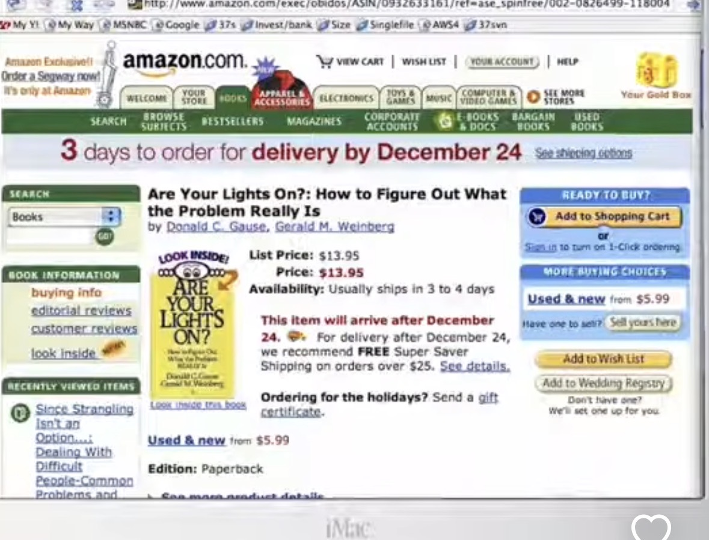
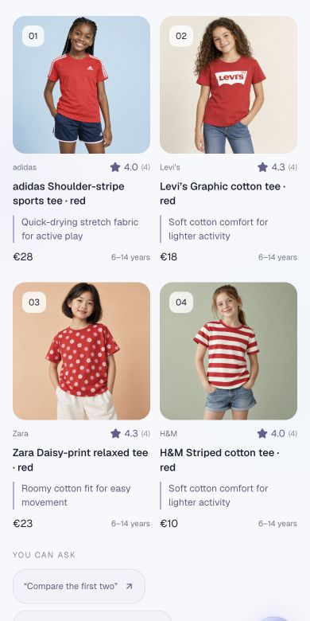
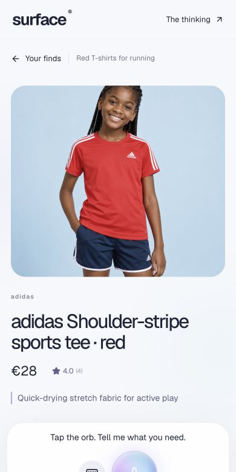
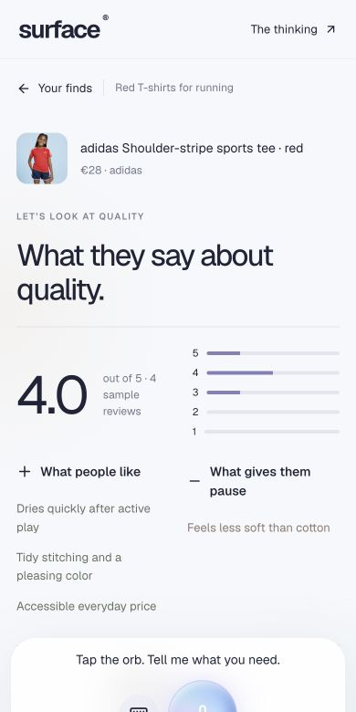

03 / Commerce / Voice-first interfaces
Defining a New
Commerce Surface.
What changes when customers can ask for what they need, and the screen shows just that?
The way we navigate ecommerce has been remarkably consistent since 2002. Look at an Amazon search page or product page from that period, and you can still recognise the core components today.
{kind=link}

Does that mean we found the right equation back then? I don’t think so.
On the homepage, you may only have a broad idea. Search helps narrow it down. The product page gives you more information, but often only part of what you need. So you go back, open another product, and repeat. We designed around a small number of interactions, and everybody got used to it.
People don’t all shop the same way.
Pretty much everybody has tried to change this. Get me products in line with my liking. Help me create a collection that does something. Make discovery more personal.
But has that replaced the standard workflow at scale? Not really.
One approach forces everyone into a consistent way of searching. The other tries to broaden the experience. But we’re not solving for one or two paths. We’re solving for a hundred ways people might want to search and shop.
The interface can now change with the question.
We can now generate and customise interfaces on the fly. You want to see just the item? Here it is. You want to compare two? No problem. You only care about what people say about the fabric? Show that.
We don’t have to lay out every possible path upfront. And from the user’s standpoint, it becomes easier: just ask for what you want.
This gets closer to the classic question: what happens when I walk into a store?
“I’m thinking about something of this sort.”
“Here are a few options.”
“Not quite. Can you narrow it down and change this?”
“These two seem fine. Is one better than the other for running?”
You work out what you need through the conversation. Each answer helps you decide what to ask next.
How the demo works
You start by speaking to the orb. The search screen shows four products, with a short explanation of why each suits what you asked for.
Open a product and you see its image, title and price. Ask about reviews, fabric or fit, and the screen changes to show that information.
If I’m buying for running, the comparison should explain which product is better for running, and why. A general rating alone doesn’t answer that.
“The next one” brings in another product. “What would I look like in this?” opens a photo-based try-on.
This demo switches between views for search, products, reviews, attributes and comparisons. It does not generate new application code with each request.
Can the way we buy things change? Definitely. We can let people ask the next question that matters to them, rather than make them look for the answer on a long product page.
From search to a specific question
{kind=link}

{kind=link}

{kind=link}

Screenshots from the demo. Product images, prices and reviews are illustrative.
Try the demo
Ask for red T-shirts for running, compare two options, or ask what customers say about the fabric.
Open Surface ↗Working concept · 144 demo products across T-shirts, jeans and jackets, with generated imagery and illustrative prices and reviews. AI try-on is a style preview. No checkout or real seller.